Meeting and Training in Riga
From the 27th to the 30th of May, the 2nd face-to-face meeting and the online course training was held in the University of Riga.
Below, an illustrated agenda of the training sessions in Riga:
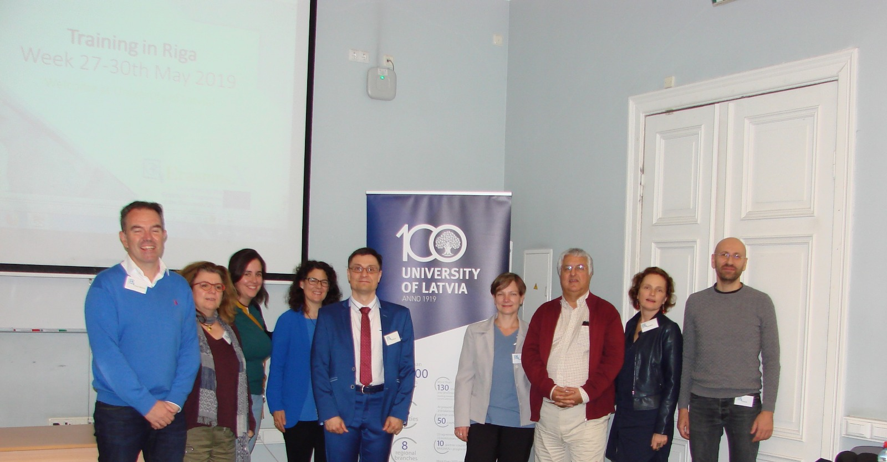 Opening of the training by University of Latvia (UL) Study department director Agnese Ligotne.
- 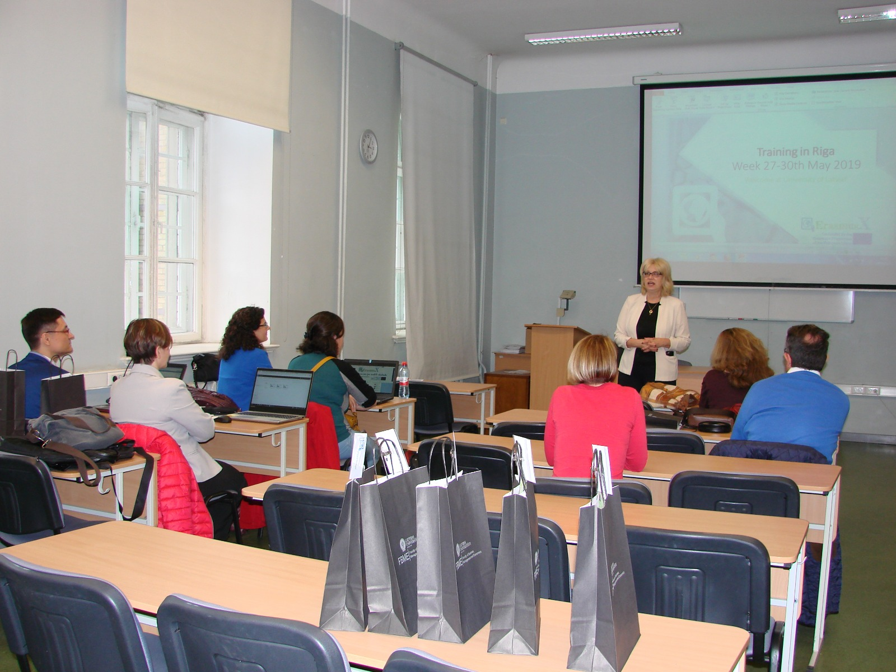
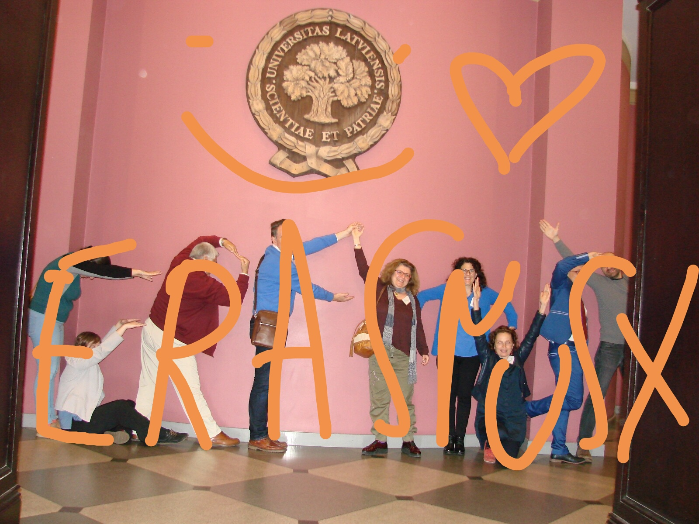 Training warming up with a team dynamic led by the host, Dr. Kristine Berzina (UL).
"Online course development tools” - Kristine Berzina/Ieva Stūrmane, UL
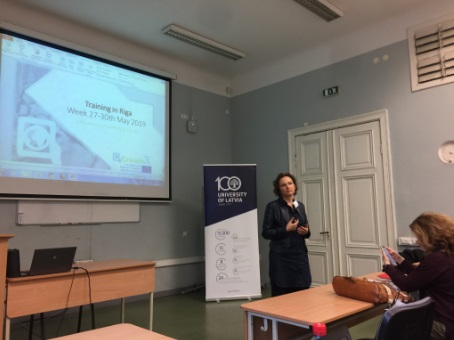 Online course development tools. Case study development for online courses. Case study material preparation for online courses. Case study video tools. In classroom task for EramusX Training program participants - short 1 min videos recorded about each of participants, further video material processing for online courses.
"BEST PRACTICES IN ONLINE TEACHING: A THEORETICAL REVIEW" - Soraya Garcia, UAH
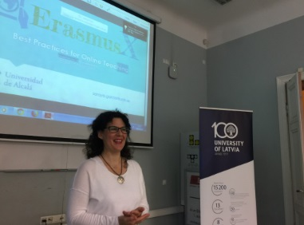 This presentation aims to uncover the main differences between online and face-to-face teaching and to present the main aspects that online course design involves. Bearing in mind these purposes, the communication will focus on the proposal of innovative practices for online learning and on the revision of the main aspects to consider when designing an online course. The final goal is to underline that Online teaching requires not only a revision of the role of teachers and learners, but also a different lesson structure as well as the promotion of virtual collaboration.
"BEST PRACTICES IN ONLINE TEACHING: A PRACTICAL APPROACH" - Elisa Rojas, UAH
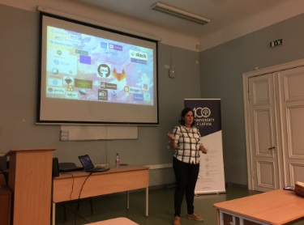 Best practices in online teaching require practical training in different aspects such as the management of an advanced agenda and lesson organizer, creating online synchronous meetings and collaborative documents, video use & edition, using web meeting tools with secure connections, or the development for online tools for testing, which are some of the aspects to be revised in this session.
"Relevant EU professional & labor frameworks to connect HE and labor market" – Luis Fernández, UAH
The transition from Higher Education to employment in EU requires a connection between courses and the reality of labor market. One of the commonest problems for this is the absence of a clear reference of occupations and the most required skills and competences with a homogeneous terminology which may serve for reference of HE educators and managers. EU has developed several references to contribute to this link between HE and labor market. One of the main initiatives is ESCO, the official labor classification of EU which will be mandatory in 2021 for all Member States. Another one is the European standard EN16234 for the ICT profession. Additional references from EU funded projects for soft skills will be also explained.
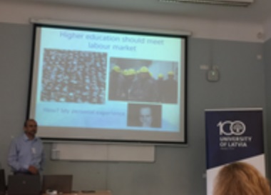
"Additional aspects for online training in EU" – Luis Fernández, UAH
EU Directive 2016/2101 entered into force on past 23rd September of 2018. It represents an additional aspect of accessibility which should be considered when creating educational materials and online training. Not only as a challenge for IT technicians but for any ICT user which creates digital contents and documents. Simple guidelines may help that everybody can contribute to easier interaction of all users of digital information. This also applies to sophisticated options like video or online assessment.
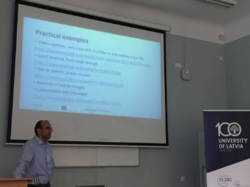
"Teaching Assessment in teaching and learning in online environment" – Agnese Rusakova, UL
Reflections on the context and standards of current teaching I Higher education; change from elite teaching to mass teaching. Teaching in a student-centered way.
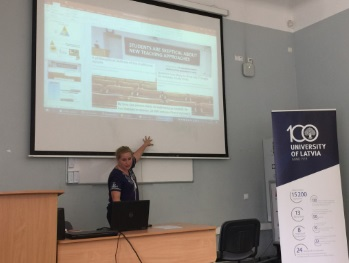
"Collaborative knowledge in e-learning environment" – Inese Daugule, UL
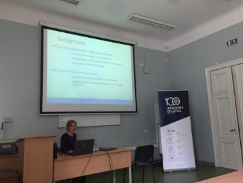 The “Basic Business” e-learning content on the Open edX platform was designed to develop seven business competences – actuality, technology, marketing, competition, finances, risks, and the ability to implement business ideas. Our recent research on collaborative e-learning in student teams embraces knowledge flows and the characteristics of knowledge in a collaborative e-learning system. The objective of the study was to find out the factors affecting the knowledge flow and the stickiness differences among various types of knowledge, including the stickiness of knowledge, student motivation, and the influence of peer-reviews on each skill; the impact of peer-reviews on the development of the students’ competences; the assessment of the quality of each student’s given and received review and its correlation with the student’s achievements in developing his/her business idea. The study results of every evaluated skill show that there are differences among knowledge types, their stickiness and impact on the students’ motivation and cooperation.
"Enhance learning experience by using interactive content" -Wiktor Wandachowicz, TUL
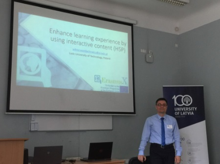 - Discussion about making on-line courses more attractive by integrating interactive content in form of H5P plugins. - What is H5P and how to use it. - Our experience in using, selecting and updating H5P plugins. - Example: Interactive Video used for Occupational Health and Safety on-line course. -How to make sure that participants actually watch the video with understanding? Upsides and some downsides after several years of using H5P.
"“Course development and management on a university MOOC platform” & “Producing a customized MOOC platform: The Federica Weblearning use case” - Maka Eradze, UNINA
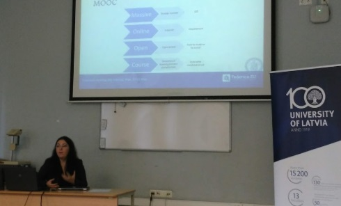
DISCOVERING the LOCAL CULTURE of Riga! :)
The ErasmusX team had also time to discover Latvian local culture. From fresh food markets in zeppelin hangars to magnificent cathedrals and medieval quarters Riga, as UNESCO World Heritage Site, had everything for an inspiring and fruitful collaborative work! :)
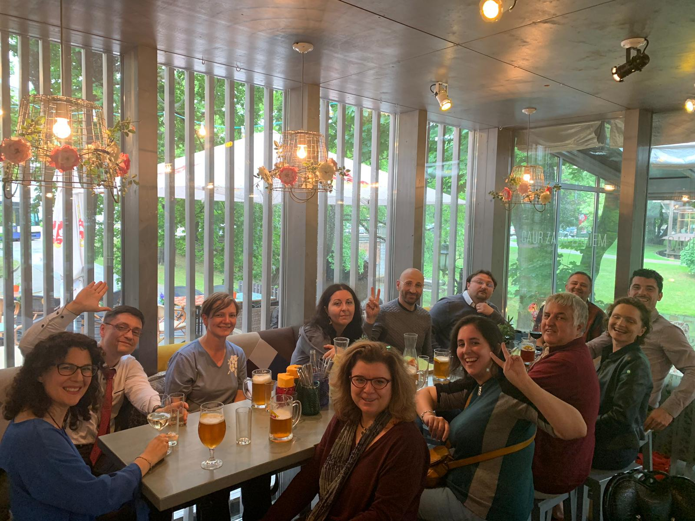 - 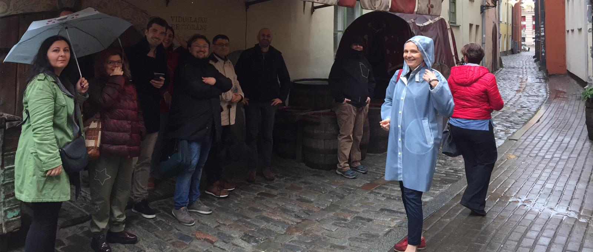
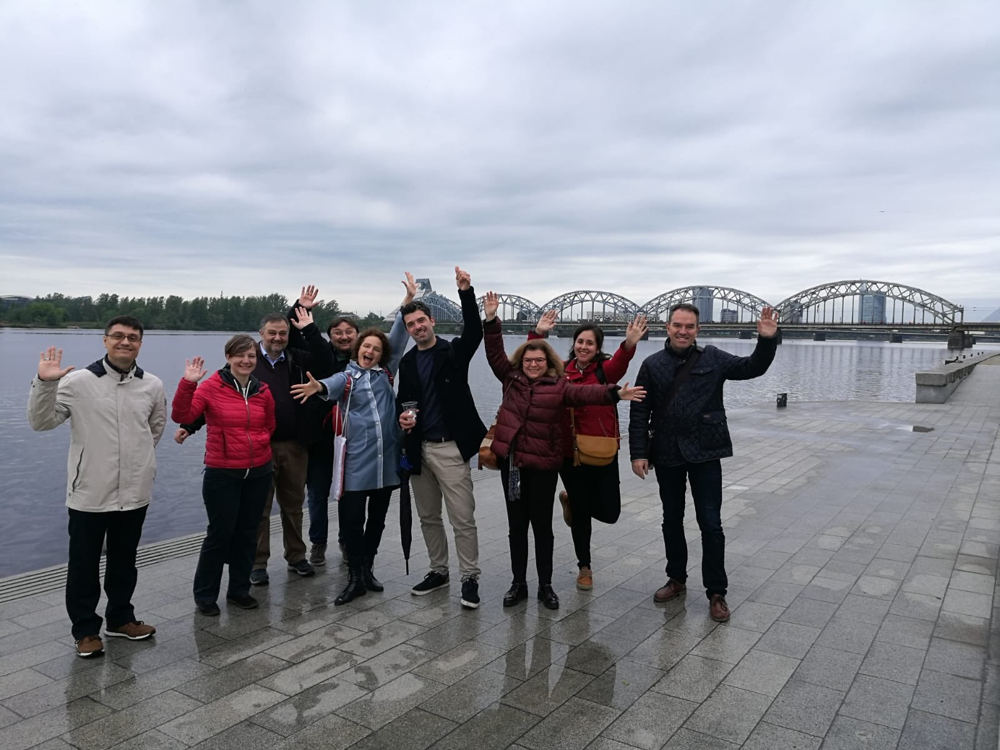 - 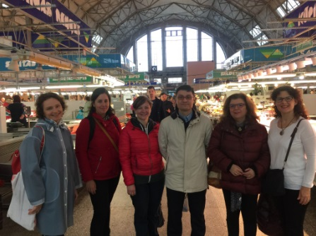
See you in the next meeting!